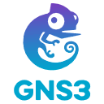
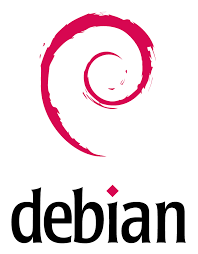

Résumé de la SAE
Objectif : Mettre en place un réseau informatique pour une petite entreprise, en utilisant le logiciel GNS3, permettant la virtualisation des appareils.
Au cours de ce projet, j'ai pu acquérir des compétences concrètes dans l'administration réseau, notamment la gestion des VLANs, la sécurité réseau via la mise en place d'ACL (listes d'accès), ainsi que la gestion de serveurs (DHCP, DNS...). J'ai aussi découvert l'utilisation du logiciel GNS3.
Environnement et Outils

GNS3
Logiciel d'émulation de réseaux complexes. Il a permis de virtualiser l'ensemble de l'architecture (routeurs, commutateurs et serveurs) pour reproduire fidèlement l'environnement de la PME.
Cisco
Équipements réseau professionnels (routeurs et commutateurs) émulés sous GNS3. L'ensemble de l'architecture repose sur la configuration de l'IOS Cisco pour le routage et la commutation.

Debian
Distribution GNU/Linux utilisée pour simuler les serveurs de la topologie. Choisie pour sa stabilité, elle a permis de faire tourner efficacement les services réseaux au sein de GNS3 de manière plus simple.
Architecture Réseau

Grandes étapes techniques
1. Segmentation et VLANs
Création de VLANs dédiés pour séparer logiquement les flux (Administration, Développeur, Administrateur). Configuration de liens "Trunk" (802.1Q) et sécurisation en modifiant le VLAN natif par défaut (VLAN 999).
2. Adressage et Routage
Mise en place de l'adressage IP sur les interfaces physiques et virtuelles (SVI). Configuration du protocole de routage dynamique RIPv2 pour assurer la connectivité entre les différents routeurs de la topologie.
3. Redondance avec STP
Déploiement du protocole Spanning Tree (STP) pour éviter les boucles réseau. Configuration stratégique des priorités (Root Primary / Secondary) pour équilibrer la charge entre les commutateurs.
4. Déploiement des Serveurs
Installation et configuration de serveurs sous Debian : mise en place d'un serveur DHCP (isc-dhcp-server) avec relais (ip helper-address), de serveurs Web (Apache2) et de transferts de fichiers synchronisés via Rsync.
5. Sécurisation (Port-Security & ACL)
Activation du Port-Security ("mac-address sticky" et mode "restrict") sur les commutateurs pour empêcher les connexions physiques non autorisées. Création d'ACL (Listes de Contrôle d'Accès) pour filtrer les flux HTTP, SSH et ICMP.
6. Accès Externe (NAT/PAT)
Configuration de la traduction d'adresses (NAT dynamique avec surcharge / PAT) sur le routeur de bordure pour permettre aux équipements du réseau privé d'accéder à Internet de façon sécurisée.
Compétences validées
Détail des Apprentissages Critiques (BUT1) mis en pratique lors de ce projet :
- AC11.03 Configurer les fonctions de base du réseau local
- AC11.04 Maîtriser les rôles et les principes fondamentaux des systèmes d'exploitation afin d'intéragir avec ceux-ci pour la configuration et l'administration des réseaux et services fournis
- AC11.06 Installer un poste client, expliquer la procédure mise en place
- AC13.01 Utiliser un système informatique et ses outils
Analyse réflexive
Au cours de cette SAE, premier projet en réseau de l'année pour moi, j'ai pu apprendre de nombreuses connaissances en mettant en oeuvre les différentes notions vues en cours dans les domaines cités. Cependant, l'utilisation et notamment l'installation du logiciel GNS3, nouveau pour moi, m'a pénalisé et je n'ai pas pu avancer autant que je le souhaitais dans le projet.